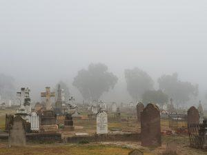

Kondycjonalizm

W swoim wyznaniu wiary napisałem, że jestem “kondycjonalistą”. Wypadałoby więc wyjaśnić, czym tak w zasadzie jest ów tajemniczy dla wielu “kondycjonalizm”. Termin ten pochodzi od angielskiego słowa conditionalism i w doktrynie chrześcijańskiej oznacza wiarę w tzw. warunkową nieśmiertelność/życie wieczne.
Pogląd tradycyjny zakłada, że dusza jest nieśmiertelna. Po śmierci człowieka oddziela się od ciała i albo idzie do nieba, albo też do szeolu. W tym ostatnim przypadku oczekuje na zmartwychwstanie (połączenie z ciałem) doświadczając cierpienia. Po zmartwychwstaniu zostaje wrzucona na wieki wieczne do Gehenny, gdzie będzie nieskończenie podlegać mękom. Natomiast pogląd kondycjonalistyczny głosi, że Bóg udziela człowiekowi nieśmiertelności/życia wiecznego warunkowo. Duszę rozumie się przeważnie jako synonim całego człowieka. Po śmierci jest on nieświadomy, “śpi” czekając na zmartwychwstanie. Po zmartwychwstaniu i osądzeniu zaś, albo będzie żyć na wieki albo też będzie ostatecznie zniszczony.
Poglądy kondycjonalistyczne spotkać można zazwyczaj w mniejszych społecznościach chrześcijańskich. Należą do nich Adwentyści Dnia Siódmego, Chrześcijanie Dnia Sobotniego, Chrystadelfianie czy też nurty Badaczy Pisma Świętego. Jednakże niezmiernie interesujący jest fakt, że pogląd ten zdobył sobie także zwolenników wśród chrześcijan ewangelicznych. Do najbardziej znanych osób deklarujących poparcie dla tej idei należy popularny teolog oraz komentator – John Stott.
Inne nietuzinkowe nazwiska broniące tego poglądu to Philip Hughes, John Wenham, Basil Atkinson, Clark Pinnock. Nie sposób także ominąć chyba najbardziej znanej pozycji książkowej ostatnich czasów omawiającej powyższy problem, pióra Edwarda Fudge’a – “The Fire that Consumes”. Interesujące jest także to, że wstęp do tej książki napisał wybitny biblista F.F. Bruce, co oczywiście nie byłoby możliwe, gdyby zdecydowanie odrzucał ten pogląd. W rzeczy samej, F.F. Bruce wydaje się pozostawać w tym sporze neutralny, choć trudno nie dostrzec w jego komentarzu co najmniej przychylności do nauczania na ten temat prezentowanego przez Fudge’a.
Autor tego serwisu dziękuje Bogu za to, że niezależnie od wyznania pojawia się coraz więcej osób broniących dobrego charakteru Boga i odwracających się od tradycyjnego poglądu na piekło.
↞ Spis treści Następny artykuł ↠
kopia strony: https://thaleia.pl/kondycjonalizm/kondycjonalizm Wszelkie prawa autorskie należą się autorowi tej strony
4799444c22